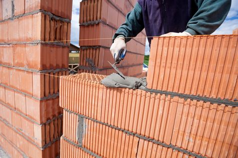

Obiteljska tvrtka za povjerenje

"Majhen gradnja" osnovana je 2021. godine kao spoj iskustva, mladosti te želje za povratkom u rodne krajeve i samostalnim radom.
Nakon sakupljenog iskustva po zemljama Europske unije od Njemačke pa do Švedske direktor tvrtke Mato Majhen uviđa priliku na tržištu
te u suradnji sa svojim bratom odlučuje osnovati građevinsku tvrtku.
Vrlo brzo postajemo prepoznati na tržištu svojom kvalitetom i odnosom prema radu te se usavršavamo u građenju obiteljskih kuća.
Lokacije gradnje su pretežito u Slavoniji te se možemo pohvaliti da naših izgrađenih kuća ima od Osijeka do Vukovara.
Na svaki Vaš upit dolazimo do Vas u najkraćem roku, saslušati Vaše želje i prijedloge o budućem projektu, te Vam dajemo stručni savjet i ponudu.
Posjedujemo svu potrebnu opremu i alate za kvalitetno i suvremeno izvođenje svih građevinskih i obrtničkih radova. Na sve radove dajemo garanciju.
Marljivim radom, upornošću i konstantnim usavršavanjem postigli smo vještine i kvalitetu, čime smo u mogućnosti kvalitetno napraviti svaki posao prema Vašim željama i potrebama.
Tijekom godina možemo se pohvaliti brojnim građevisnkim rješenjima i izvedbama te velik broj zadovoljnih klijenata i preporuka.
Raspolažemo alatom, opremom i strojevima za izvođenje kompletnih građevinskih radova.
| Naziv tvrtke: | Majhen gradnja j.d.o.o |
|---|---|
| Direktor: | Mato Majhen |
| Godina osnivanja: | 2019.godina |
| Adresa sjedišta: | Alojzije Stepinca 31, Sikirevci |
| OIB: | 32216182225 |
| Kontakt telefon: | 0911639624 |
| e-mail: | mato.majhen@gmail.com |
- Projektiranje i građenje građevina te stručni nadzor građenja
- Stručni poslovi prostornog uređenja
- Djelatnost prostornog uređenja i gradnje
- Djelatnost upravljanja projektom gradnje
- Djelatnost tehničkog ispitivanja i analize
- Čišćenje svih vrsta objekta i površina
- Prijevoz tereta u unutarnjem cestovnom prometu
- Savjetovanje u vezi s poslovanjem i upravljanjem
- Uređivanje i održavanje okućnica vrtova i parkova
- Iznajmljivanje strojeva i opreme za građevinarstvo i inženjerstvo sa ili bez rukovatelja